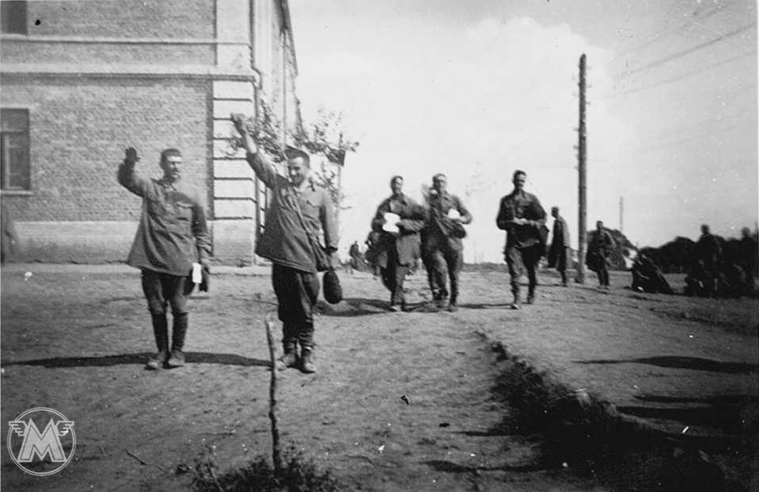
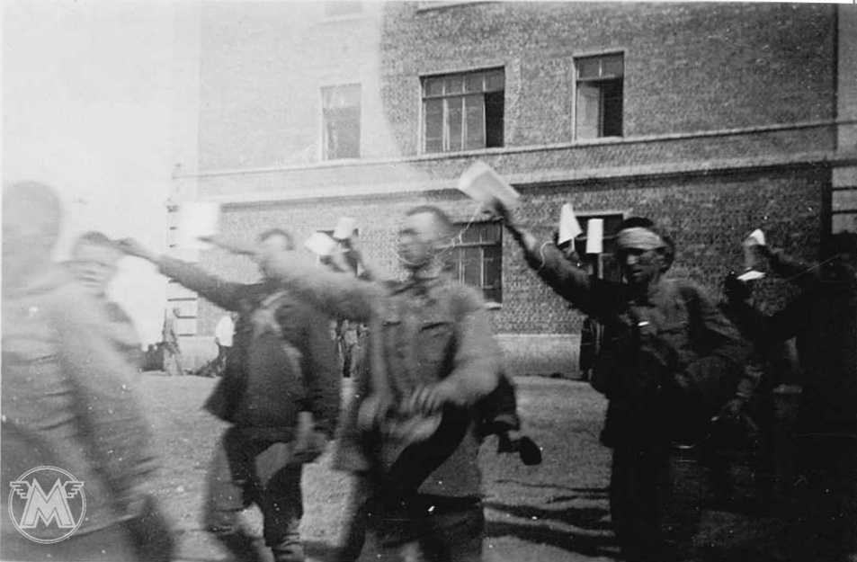
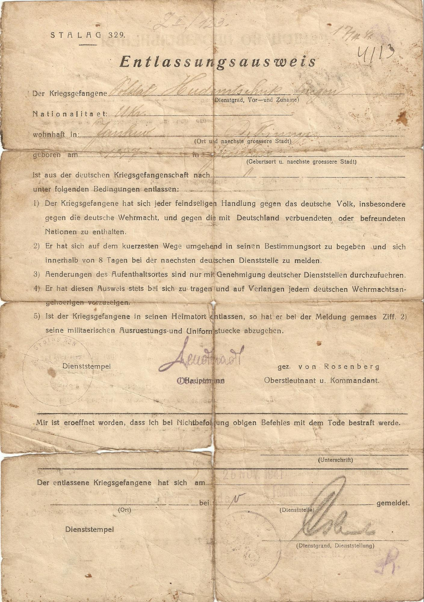
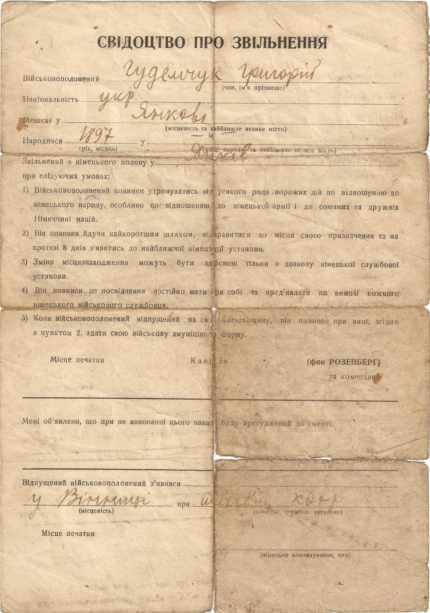
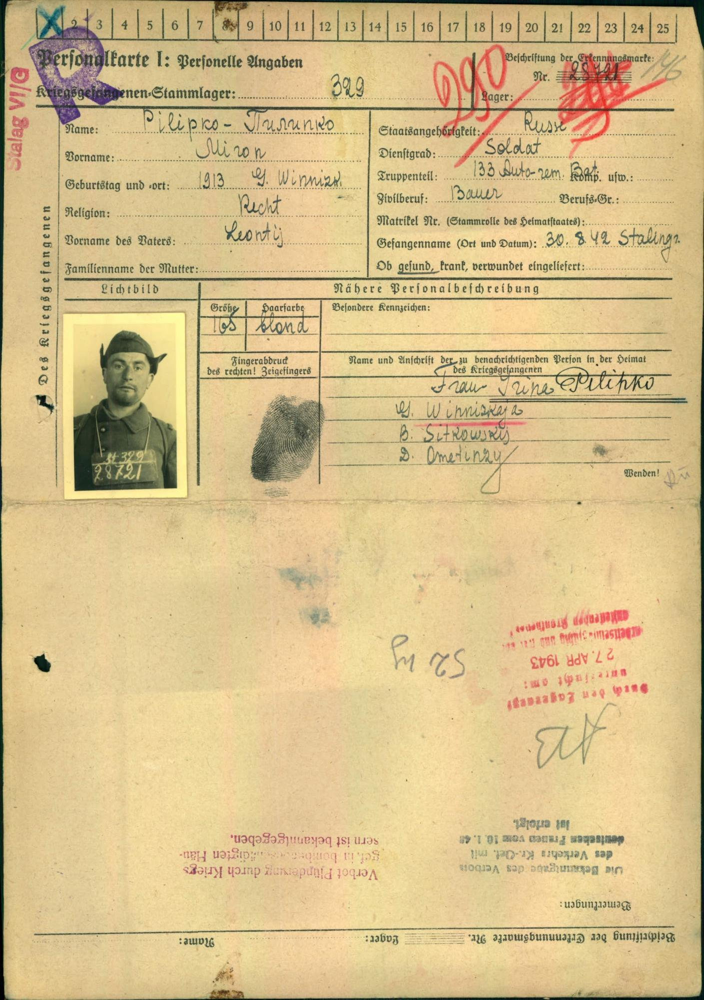
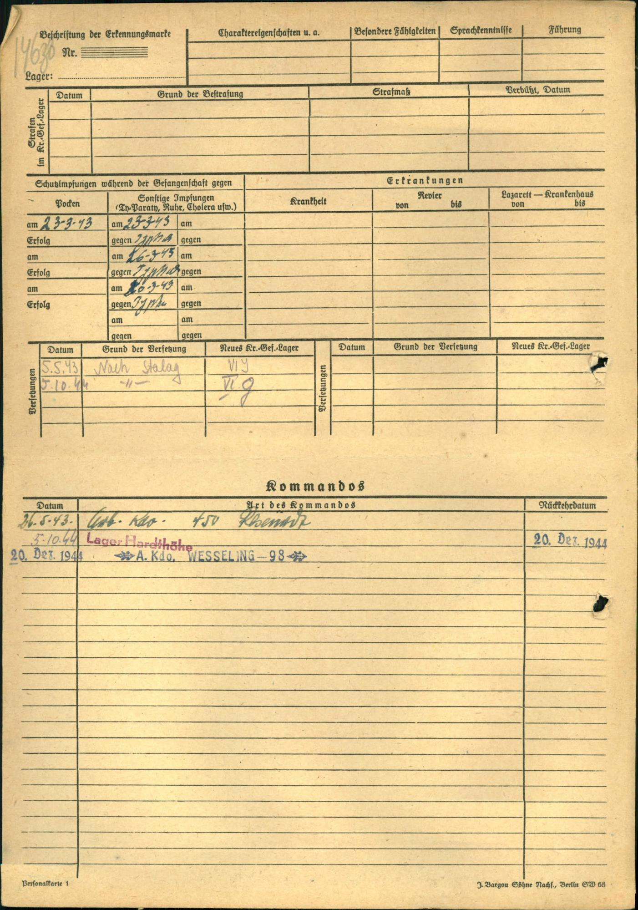

Доля радянських військовополонених упродовж війни визначалася суперечливими інтересами в середовищі нацистського керівництва. З одного боку на полонених червоноармійців не поширювалися стандарти міжнародного права стосовно розташування, харчування, медичного обслуговування, їхньої фізичної недоторканості. Смерть від голоду та інфекційних хвороб була головною причиною масової загибелі восени-взимку 1941–1942 рр. З іншого – складна національна політика нацистів в середовищі радянських військовополонених, яка протиставляла етнічним росіянам інші національності СРСР, давала шанс на порятунок. Короткий період, з липня до листопада 1941 р., з полону відпускали місцевих жителів: етнічних німців, українців, представників балтійських, мусульманських народів Кавказу.Наприклад, у 1941 р. як «українців» було звільнено 270 095 осіб (235 466 бранців випущені з таборів, що перебували в підпорядкуванні тилових частин групи армій «Південь»). Але у порівнянні з мільйонами загиблих, шанс на порятунок завдяки звільненню з полону отримала незначна кількість бранців.
До кінця 1941 р. таким шансом скористалися понад 270 000 червоноармійців, а на кінець 1945 р. – 533 000. Але формулювання «звільнений з полону» також вживали, коли передавали полоненого до гестапо, концтабору або з інших причин позбавляли статусу військовополоненого. Наприклад, вступ до воєнізованих підрозділів Вермахту, поліції, військ СС, шуцманшафту.


Серія фотографій про звільнення полонених українців з Вінницького табору. 15 серпня 1941 р. © Приватна колекція М. Богарта, І.Ланового
Підпис на звороті фото: «З німецьким вітанням і довідкою про звільнення з полону в руці українські військовополонені біжать до воріт табору. Для них війна закінчилася і вони радіють. Коли вона закінчиться для нас??? Вінниця, 15 серпня 1941 р.»
Жінки день-у-день чекають звільнення своїх чоловіків і не знають, чи вони взагалі живі. Вінниця. 15 серпня 1941 р. © Приватна колекція М. Богарта, І.Ланового


Фото 1. Свідоцтво про звільнення з полону Григорія Гудемчука, видане командуванням шталагу 329. Вінниця. 25 листопада 1941 р. © Приватна колекція М. Богарта, І.Ланового
Фото 2. Україномовна сторона свідоцтва про звільнення з полону Григорія Гудемчука. Вінниця, 25 листопада 1941 р. © Приватна колекція М. Богарта, І.Ланового
Довідка управи села Кам’янка Славутського р-ну Хмельницької обл. Бондаренко Віри про те, що «вона відправляється до міста Вінниці по свого чоловіка, Бондаренко Павла Омельковича, який знаходиться у полоні у м. Вінниця». 1 березня 1942 р. © Державний архів Хмельницької області.
Водночас з ідеологічними мотивами у ставленні до полонених у Третьому Райху враховувалися й потреби воєнної економіки. Використання праці військовополонених було головним пунктом у звітах комендантів таборів. Разом з тим вони повідомляли, що «при високому ступені виснаження і голодування» полонених говорити про залучення їх до роботи не має можливості.
У Радянському Союзі здачу в полон противникові розглядали як дезертирство й зраду, тому після війни звільнені з німецького полону червоноармійці зазнавали нових переслідувань від радянської влади. З 1 836 562 полонених, які вижили й повернулися на батьківщину, 233 400 були засуджені й відбували покарання в таборах ГУЛАГу, понад 600 000 примусово працювали у так званих робочих батальйонах. Прикладом такої долі є історія військовополоненого Мирона Пилипка.


Персональна картка реєстрації військовополоненого Мирона Пилипка, заповнена у шталазі 329 Вінниця. © Державний архів Вінницької області.
Мирон Пилипко народився в 1913 р. в селі Ометинці Ситковецького району Вінницької області. Батька розкуркулили та вислали із села у 1926 році як церковного старосту. Під час Голоду 1933 р. померла його матір, брат та дві сестри. Напередодні війни він був одружений і мав двоє дітей. У червні 1941 р. був призваний до Червоної армії. Під Сталінградом 30 серпня 1942 р. потрапив у полон. Реєстрацію пройшов у шталазі 329 у Вінниці. Навесні 1943 р. переправили на територію Німеччини. Полонених везли у тісно набитих товарних вагонах, що не можна було навіть сісти, замість їжі «посівали» на голови сирим зерном. Під час полону від недоїдання і голоду важив 36 кг при зрості 165 см. З травня 1943 р. працював у різних робочих командах шталагу VI G (Бонн-Дуйсдорф), земля Північний Рейн-Вестфалія. Після війни з червня 1945 р. два місяці проходив фільтраційну перевірку у збірному таборі для репатріантів м. Тюрков (Thürkow). Після цього його зарахували до 80-го робочого батальйону НКВС і відправили в Харків працювати на завод «Світло шахтаря». Умови утримання у робочому батальйоні нічим не відрізнялися від німецького полону. Він навіть не міг повідомити дружині, що залишився живим. Лише влітку 1947 р. Мирон Пилипко повернувся в рідне село. Працював в колгоспі, виростив з дружиною шестеро дітей. Все життя зазнавав утисків за те, що був в полоні. Навіть синові під час строкової служби в Радянській армії не дозволили служити за кордоном.
Сторінка анкети «громадянина СРСР, який повертається з-за кордону» з фільтраційної справи колишнього військовополоненого Мирона Пилипка. Ситковецьке МВС. 24 липня 1947 р. © Державний архів Вінницької області.
Всі червоноармійці, які вижили в німецькому полоні мали пройти перевірку на лояльність, так звану фільтрацію. До кінця існування СРСР ці фільтраційні справи зберігалися в архівах КДБ. А в стандартних анкетах відділу кадрів існував пункт «чи перебували ви чи ваші родичі в полоні під час війни».
Родина Мирона Пилипка після семи років розлуки і невідомості: дружина Ірина, донька Марія, син Василь. Ометинці. 1947 р. © Приватний архів родини Пилипко
Родина Мирона Пилипка: дружина Ірина, донька Марія, сини Василь, Андрій, Іван, Михайло, Микола. Ометинці. 1963 р. © Приватний архів родини Пилипко.